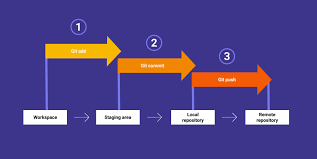
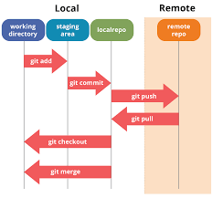

Git is powerful in the following different ways:
|  |
| Command name | Description | Usage |
|---|---|---|
| git init | This command turns a directory into an empty Git repository. This is the first step in creating a repository. | $ git init |
| git add | Adds files in the to the staging area for Git. Before a file is available to commit to a repository, the file needs to be added to the Git index (staging area). There are a few different ways to use git add, by adding entire directories, specific files, or all unstaged files. | $ git add |
| commit |
Record the changes made to the files to a local repository. For easy reference, each commit has a unique ID.
It’s best practice to include a message with each commit explaining the changes made in a commit. Adding a commit message helps to find a particular change or understanding the changes.
Usage $ git commit -m "Commit message in quotes" |
|
| git status | This command returns the current state of the repository. git status will return the current working branch. If a file is in the staging area, but not committed, it shows with git status. Or, if there are no changes it’ll return nothing to commit, working directory clean. | $ git status |
| git config | With Git, there are many configurations and settings possible. git config is how to assign these settings. Two important settings are user user.name and user.email. These values set what email address and name commits will be from on a local computer. With git config, a --global flag is used to write the settings to all repositories on a computer. Without a --global flag settings will only apply to the current repository that you are currently in. |
$ git config |
| git branch | To determine what branch the local repository is on, add a new branch, or delete a branch. | $ git branch |
| git check out | To start working in a different branch, use git checkout to switch branches. |
$ git checkout |
| git merge | Integrate branches together. git merge combines the changes from one branch to another branch. For example, merge the changes made in a staging branch into the stable branch. |
$ git merge |
|  |